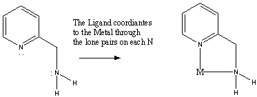

|
More Information on
the [tris(α-picoylamine)Fe(II)]2+ Ion
This is one isomer of the [tris(α-picoylamine)Fe(II)]2+ ion shown with all muliple bonds
The ligand is neutral and does not deprotonated when it binds. Three ligands bind to the Fe(II) ion to create a 2+ charged complex ion.

Reference: A.M. Greenaway, E. Sinn; J. Am. Chem. Soc., 100, 1978, 8080.
Other interesting information: This is a low spin Fe(II) complex. There is another isomer of this ion that above 200K is a high spin Fe(II) complex.
|